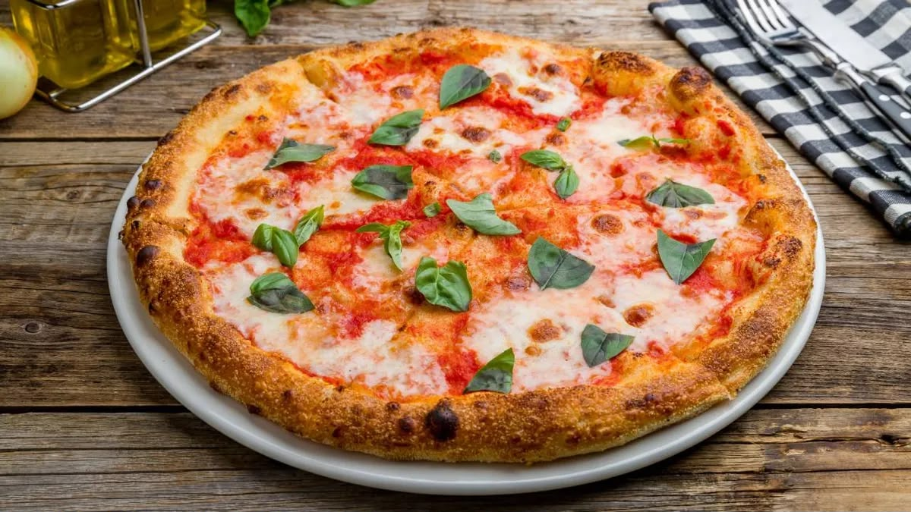

Ingredientesss
- Harina
- Agua tibia
- Levadura seca
- Sal
- Aceite de oliva
- Tomate o salsa de tomate
- Muzzarella fresca
- Albahaca
- Ajo
Preparacion
- Disolver la levadura en el agua tibia
- Mezclar la harina con sal, agregar el agua con levadura y el aceite, y amasar hasta lograr una masa lisa y elastica
- Dejar leudar lamasa tapada hasta que duplique su tamaño
- Dividir en bollos y dejar reposar un rato mas
- Precalentar el horno con una bandeja
- Triturar los tomates con el ajo, aceite y sal
- Hornear hasta que el borde este dorado y que el queso este derretido
- Sacar del horno,agregar albahaca fresca y un poco de aceite
Aca se ve como quedaria una pizza con los ingredientes

explicacion de la pizza margherita
como surgio la pizza margherita
definicion de la pizza margherita
pizza en napoles